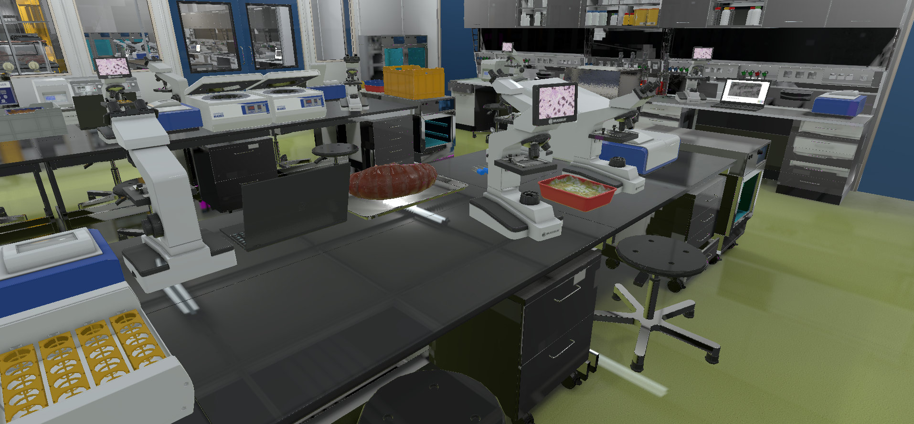

Welcome back, Noah Cameron
LOGS
June 13, 2020
I finally know what I have to do.
June 18, 2020
Jasper thinks I'm acting off. Made a report about it and everything. But my mind is more clear then it's ever been.
June 24, 2020
Hana Stone let the chance of a lifetime with Whisper slip through her fingers. I'm not going to make the same mistakes as her.
July 1, 2020
Now even Hana thinks I'm acting off. Why don't they realise? They're acting just like her.
July 4, 2020
Vixen's getting too close. But I was too sloppy. I think Hana is starting to put pieces together. I can only hope she sees the same thing I do.
July 9, 2020
She didn't. Thankfully, I opened Robert's mind, and made him deal with her for me.
July 30, 2020
I should be thankfully Hana being paranoid in the past has allowed me to peer into messages I wouldn't have used to. Vixen and Maya are getting too close. I couldn't open their minds.
August 6, 2020
Maya has been dealt with.
August 14, 2020
Vixen has been dealt with.
August 22, 2020
I can finally spread the joy that is Whisper all around the country. Soon, the world. This effort will not have been for nothing. Ash disagreed. They will be dealt with.
August 25, 2020
Ash has been dealt with.
August 29, 2020
Hana is back, trying to get involved with issues that aren't hers to deal with. I should of dealt with her personally.
September 6, 2020
Hana's finally contacted me. Something big is about to happen.